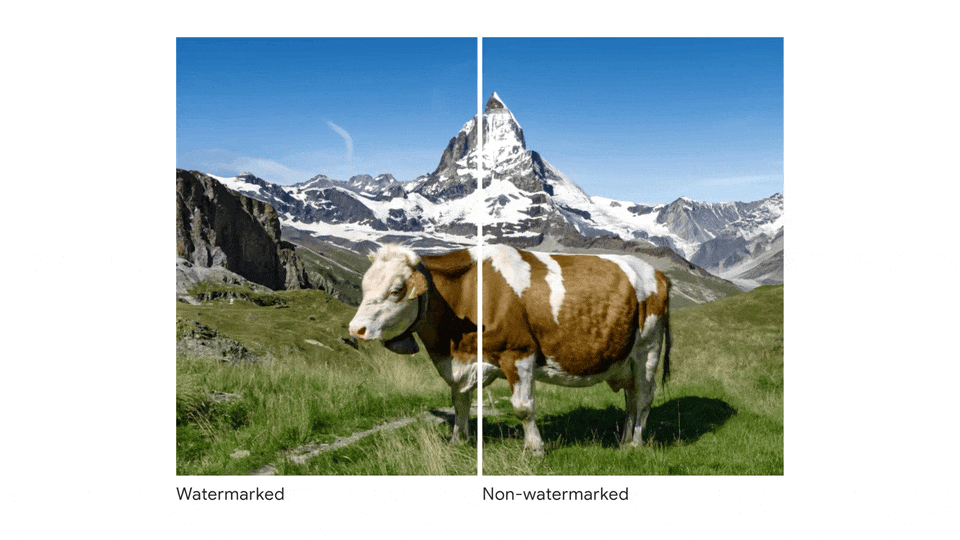

Executive Summary
On August 2, 2026, Article 50 of the EU AI Act — its transparency clause — begins enforcement. From that day, deepfakes, AI-generated text on matters of public interest, and chatbots must disclose that "this content was created or manipulated by AI." The Code of Practice the European Commission finalized on June 10 spells out how to carry that obligation into practice: how to inscribe provenance into the content itself. This piece looks at what that shift demands of how Korean organizations manage their data.
The heart of it is not the label but how the label is recorded. A single line of text won't do; the Code calls for a multi-layer approach that combines cryptographically signed metadata like C2PA with invisible watermarking. Breach the labeling obligation and the penalty can reach €7.5M or 1.5% of global revenue. A Korean company serving EU users falls within scope regardless of where its headquarters sit.
The moment provenance metadata is promoted from a voluntary governance practice to legal evidence you submit in an audit, a data "pedigree" stops being a cost line and becomes an asset. So the question August 2 poses is simple: can your organization prove "where, how, and by whom" its data was made?
Aug 2
Article 50 takes effect
Enforcement begins for deepfakes, public-interest text, and chatbots
1.5% rev.
Labeling-breach penalty
Up to €7.5M or 1.5% of global revenue, whichever is greater
6,000+
C2PA adopters
Content-provenance standard backed by Adobe, MS, Google, BBC, AP
~45 days
Time left to prepare
From June 17, 2026 to the enforcement date
What Happened on June 10
On June 10, 2026, the European Commission published its finalized "Code of Practice on Transparency of AI-Generated Content." The name sounds like a new regulation, but the Code itself is not law. It works more like a how-to manual for complying with a clause that already exists: Article 50 of the EU AI Act.
This is where confusion often creeps in. The Code is voluntary, but the Article 50 obligations it implements are legally binding. The EU AI Act (Regulation EU 2024/1689) entered into force in 2024, and its transparency tier, Article 50, begins enforcement 24 months later, on August 2, 2026. Article 50 applies whether or not you sign the Code; the Code simply maps the safest path to meeting that obligation.
1.1The Three Kinds of Content That Trigger Labeling
Article 50 requires labeling across roughly three categories, each with a different responsible party and a different requirement.
- • Deepfakes — images, audio, or video generated or manipulated by AI. The deployer distributing them must disclose that the content was "AI-generated or manipulated."
- • AI-generated text on matters of public interest — writing with broad social impact, such as news, politics, or public information. The deployer must disclose that it is AI-generated.
- • Chatbots and interactive AI — the provider must design the system so people can recognize they are conversing with an AI.
There are exemptions, too. Deepfakes that are evidently artistic, satirical, or fictional need only a lighter disclosure, and content authorized for criminal investigation is excluded. Notably, AI-generated text reviewed and edited under the responsibility of a human editor is exempt from the deployer's labeling obligation. That last clause is the practical reason behind the "record of editorial intervention" we return to later.
What Changes on August 2
After August 2, the first thing to settle is what role your organization plays. The same content carries different obligations depending on whether you are a Provider or a Deployer. A Provider builds the model or system and must embed a machine-readable AI marking into the content at the moment of generation. A Deployer is the one that actually distributes or uses the content and must attach a human-readable disclosure. The crucial point: an organization that builds a service on top of an external API (OpenAI, say) can also be classified as a Deployer depending on the circumstances.
2.1Enforcement Timeline and Penalties
August 2 is the starting line, with stages that follow. Source: EU AI Act Article 50.
Penalties span a wide range by type of breach. An Article 50 labeling breach runs up to €7.5M or 1.5% of global revenue; a broader AI Act breach up to €15M or 3% of revenue; and a breach of general-purpose AI (GPAI) model obligations up to €35M or 7% of revenue. Because even a simple missing label can lead to a revenue-proportional fine, labeling is not a procedural formality but a financial risk.
2.2Korean Companies Are in Scope, Too
Article 50 does not target only organizations headquartered in the EU. If a service is accessible to EU users, it falls within scope whether headquarters are in Korea, the United States, or Japan. Most B2B SaaS products and apps that expose AI-generated content to EU users qualify.
Korea already has a similar law. The AI Basic Act, which took effect on January 22, 2026, created a labeling obligation for generative-AI output ahead of the EU. The two regimes point in the same direction but differ in force.
| Item | EU AI Act Article 50 | Korea AI Basic Act |
|---|---|---|
| Effective from | 2026-08-02 | 2026-01-22 (grace period in effect) |
| Deepfake labeling | Deployer obligation, explicit disclosure | Article 31, watermark included |
| Generated text | When it concerns public interest | Generative-AI output broadly |
| Penalties | Up to 7% of global revenue | KRW 5M (1st) / 10M (2nd) / 15M (3rd) |
Korea started earlier, but its penalties are lower and it is still in a grace period. The EU, by contrast, carries heavy penalties and applies directly to foreign companies. An organization running a global service ends up treating the stricter regime — the EU's — as its de facto baseline.
This is not just distant regulatory news. At home, major platforms like Kakao and Naver are already revising their terms of service to reflect generative-AI disclosure. That is a signal that the labeling obligation is not an abstract clause but real change work that alters service screens and data pipelines. With the EU's August 2 and Korea's grace period overlapping, it is ultimately cheaper to fold both regimes into a single provenance-recording system built to the stricter standard than to respond to each separately.
The Machine-Readable Tag: C2PA
Say "label" and it's easy to picture a small note in the corner of a screen. But the labeling Article 50 requires splits into two layers: a human-visible disclosure and a machine-readable marking. The human disclosure is the label you see; the machine marking is metadata inscribed into the content file itself. The de facto standard for producing the latter is C2PA.
3.1A Nutrition Label for Content
C2PA (Content Credentials) is a technology that attaches a "nutrition label" to content. It binds the creation timestamp, the AI model and version used, and any subsequent human edits into a cryptographic signature embedded in the file. It is an open standard adopted by more than 6,000 members — Adobe, Microsoft, Google, Intel, BBC, AP, and others — and has been formally standardized as ISO/IEC 21694. It is the strongest candidate for meeting the "machine-readable marking" requirement Article 50(2) describes.
3.2Why C2PA Alone Isn't Enough
The problem is that C2PA is surprisingly fragile. Take a single screenshot or convert the file format once, and the metadata can fall off entirely. So the Code specifies not a single technology but a multi-layer approach that overlaps several methods. In the Code's own words: "no single technique is sufficient on its own."
| Layer | Technology | Strength | Limitation |
|---|---|---|---|
| L1 | C2PA signed metadata | Tracks model and edit history via cryptographic signature | Can be stripped by screenshots or format conversion |
| L2 | Invisible watermarking (e.g. SynthID) | Embedded in content; survives format conversion | Hard to prove the original chain on its own |
| L3 | Fingerprinting / registry | Records the generation event centrally | Optional, with infrastructure overhead |

The three layers cover one another's gaps. Content that has lost its C2PA still carries the watermark, and the original-tracing a watermark alone can't deliver is filled in by the registry. Put differently, the equation "we adopted C2PA, so compliance is done" doesn't hold. With roughly 45 days left to August 2, the practical question is how many organizations have time to integrate all three layers and verify that the markings survive compression, re-encoding, and social-media uploads.
When a Data Pedigree Becomes an Asset
Step back from the regulatory story so far, and what lies beneath it is ultimately a question of data provenance. The demand to inscribe "human-made or machine-made" into every piece of content in a machine-readable form is the same as the demand to keep the creation chain of data as a traceable record.
In the past, tracking data provenance was a voluntary governance practice — nice to have, but no immediate problem if you skipped it, the kind of work filed under "cost." After Article 50 takes effect, that picture flips. A C2PA manifest becomes an immutable record of the generating model, version, parameters, prompt, and edit history, and that record becomes legal evidence you must submit in an audit. Content whose provenance you cannot prove is now an operational risk.
The moment provenance metadata becomes both a compliance deliverable and legal evidence, a data pedigree stops being a cost and becomes an asset. If an organization cannot prove "where our data came from," that is no longer homework to defer but an immediate financial and legal risk.

This trend is not confined to the EU. The eight provenance standards the Data & Trust Alliance released in 2026 define a data's source, legal rights, and lineage as standard fields. Accenture's research likewise notes that AI-driven metadata automation improves audit trails and reduces the risk that comes from incomplete and inconsistent metadata. Regulation and industry standards are converging on the same direction: record provenance so a machine can read it.
Is Your Organization Ready?
Short on time is no reason to give up. Translate the preparation steps the Code lays out into organizational practice and they distill into the following five. Given that certification typically takes 5–9 months, starting now still won't fully meet August 2 — but the earlier you begin, the lower the risk.
- • Classify your place in the value chain — first decide whether you are a Provider or a Deployer. Misclassify, and the obligations and penalty levels that apply change. Even organizations using an external API can be Deployers.
- • Map your AI usage — catalog, without omission, the content AI generates inside your organization. If you don't know where and what is being generated, you can't pin down what needs labeling.
- • Filter public-interest content — set criteria for which generated text counts as a "public-interest matter." News, politics, and public-information writing are the priority cases.
- • Integrate the tech stack — embed C2PA signing and watermarking into the pipeline, and test robustness so the markings survive JPEG compression, MP3 re-encoding, and social-media uploads.
- • Record editorial intervention — document in metadata the points a human reviewer touched. Only with this record can you claim the deployer-obligation exemption for text produced under human responsibility.
It's worth examining how those five add up to the figure of 5–9 months. Expressed as durations, the preparation path the Code sketches runs roughly: about 1 month for value-chain classification, 2–4 months to integrate C2PA signing and watermarking into the pipeline, 1–2 months of robustness testing to see whether the markings hold up after compression, re-encoding, and social uploads, and another 1–2 months for final conformity certification. Because it is serial work where no step can really be skipped, the 45 days left to August 2 are only the starting line of the full schedule.
The common denominator running through all five steps comes down to one thing: are you ready to record provenance at the very moment content is generated? The labeling obligation isn't met by sticking on a single label just before publishing. Only when the data's pedigree runs unbroken through the entire process of generation, editing, and distribution can you answer, after August 2, when someone asks "where did this come from?"
References
Official Documents
- 1.European Commission. (2026). "Commission Publishes Code of Practice on Marking and Labelling of AI-Generated Content." Shaping Europe's Digital Future.
- 2.European Commission. (2026). "Press Release IP/26/1328." Press Corner.
- 3.EU AI Act. "Article 50: Transparency Obligations for Providers and Deployers."
- 4.EU AI Act. "Transparency Rules under Article 50."
Legal & Industry Analysis
- 5.ComplexDiscovery. (2026). "Europe's AI Labeling Rules Arrive with a Voluntary Code and a Hard Deadline."
- 6.Jones Day. (2026). "European Commission Publishes Draft Code of Practice on AI Labelling and Transparency."
- 7.SoftwareSeni. (2026). "EU AI Act and Content Provenance Regulations Making C2PA Urgent in 2026."
- 8.sota.io. (2026). "EU AI Act GPAI Watermarking 2026: Technical Requirements & Implementation Guide."
- 9.MagicLight. (2026). "C2PA and Global Watermarking Mandates for AI Video in 2026."
Korea Regulation & Commentary
- 10.AI Times. "EU Releases Draft Code of Conduct for Marking and Labeling AI-Generated Content." (Korean)
- 11.Peekaboo Labs. "A Complete Guide to Korea's AI Basic Act — 2026 Enforcement, High-Impact AI and Generative-AI Obligations." (Korean)
- 12.clobe.ai. "Korea's 2026 AI Basic Act, Effective Today: Key Points Summarized." (Korean)